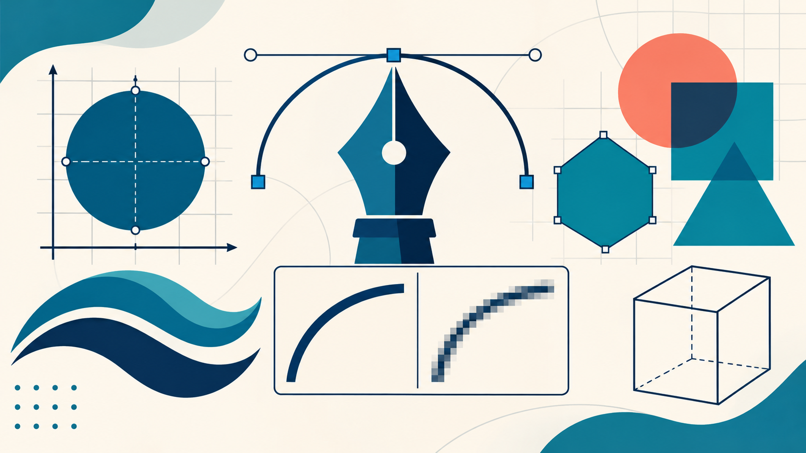

Векторная графика включает разные типы геометрических объектов, области применения и форматы хранения.

Классификация
По типу объектов
Точки; прямые и отрезки; кривые; прямоугольники и многоугольники; окружности и эллипсы; контуры и составные фигуры; текстовые объекты; группы объектов.По назначению
Иллюстративная; техническая; картографическая; типографическая графика; схемы и диаграммы; графика интерфейсов; рекламная графика.По формату хранения
SVG, AI, CDR, EPS и PDF. SVG — открытый стандарт двумерной графики для веб-среды; AI связан с Illustrator, CDR — с CorelDRAW.Схема: из чего строится векторный объект
Опорные точки+Линии и кривые+Контур+Заливка и обводка
Историческая справка
| Период / год | Событие |
|---|---|
| 1963 | Айвен Сазерленд создал Sketchpad в MIT. Система позволяла взаимодействовать с линиями и геометрическими объектами с помощью светового пера. |
| Последующие десятилетия | Векторный подход получил применение в системах автоматизированного проектирования (CAD) и технических чертежах. |
| 1980–1990-е | Распространяются профессиональные графические редакторы, в том числе Adobe Illustrator и CorelDRAW. |
| 1999 | Появилась первая рабочая версия спецификации SVG, разработанная W3C. |
Области применения
Логотипы и фирменный стиль
Реклама и полиграфия
Веб-дизайн и интерфейсы
Картография
Архитектура и инженерия
Шрифты и типографика
Образовательные схемы и диаграммы
Перспективы развития
К основным тенденциям относятся интеграция искусственного интеллекта в графические редакторы, автоматическая векторизация, развитие SVG, облачная совместная работа и интерактивная графика. Человек сохраняет роль постановщика задачи, выбора и профессиональной доработки результата.
Полный текст реферата
Вставка через Google Диск. Загрузите приложенный файл «Реферат_Векторная_графика.docx» на Google Диск, откройте третью страницу сайта и выберите «Вставка → Диск», затем найдите документ и вставьте его на страницу. В настройках блока задайте удобную ширину и высоту.
Заключение
Векторная графика востребована благодаря масштабируемости, точности, редактируемости и структурированности. Она применяется в дизайне, рекламе, инженерии, картографии и веб-разработке, а дальнейшее развитие связано с ИИ, облачными технологиями и интерактивностью.